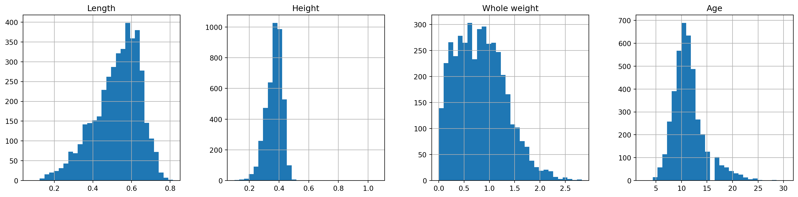

Code
import pandas as pd
import numpy as np
import seaborn as sns
import matplotlib.pyplot as plt
%matplotlib inline
import warnings
warnings.filterwarnings('ignore') # suppress warning# loading basic libraries and configuration of environments
## Import libraries
import pandas as pd
import numpy as np
import seaborn as sns
import matplotlib.pyplot as plt
%matplotlib inline
import warnings
warnings.filterwarnings('ignore') # suppress warning
sns.set_theme(context='notebook',
style='white',
palette='deep',
font='monospace',
font_scale=0.7,
color_codes=True,
rc=None)
import matplotlib
plt.rcParams['figure.figsize'] = (4,3)
plt.rcParams['figure.facecolor'] = '#F0F8FF'
plt.rcParams['figure.titlesize'] = 'medium'
plt.rcParams['figure.dpi'] = 150
plt.rcParams['figure.edgecolor'] = 'green'
plt.rcParams['figure.frameon'] = True
plt.rcParams["figure.autolayout"] = True
plt.rcParams['axes.facecolor'] = '#F5F5DC'
plt.rcParams['axes.titlesize'] = 10
plt.rcParams["axes.titleweight"] = 'normal'
plt.rcParams["axes.titlecolor"] = 'Olive'
plt.rcParams['axes.edgecolor'] = 'pink'
plt.rcParams["axes.linewidth"] = 2
plt.rcParams["axes.grid"] = True
plt.rcParams['axes.titlelocation'] = 'center'
plt.rcParams["axes.labelsize"] = 9
plt.rcParams["axes.labelpad"] = 2
plt.rcParams['axes.labelweight'] = 1
plt.rcParams["axes.labelcolor"] = 'Olive'
plt.rcParams["axes.axisbelow"] = False
plt.rcParams['axes.xmargin'] = .2
plt.rcParams["axes.ymargin"] = .2
plt.rcParams["xtick.bottom"] = True
plt.rcParams['xtick.color'] = '#A52A2A'
plt.rcParams["ytick.left"] = True
plt.rcParams['ytick.color'] = '#A52A2A'
plt.rcParams['axes.grid'] = True
plt.rcParams['grid.color'] = 'green'
plt.rcParams['grid.linestyle'] = '--'
plt.rcParams['grid.linewidth'] = .5
plt.rcParams['grid.alpha'] = .3
plt.rcParams['legend.loc'] = 'best'
plt.rcParams['legend.facecolor'] = 'NavajoWhite'
plt.rcParams['legend.edgecolor'] = 'pink'
plt.rcParams['legend.shadow'] = True
plt.rcParams['legend.fontsize'] = 9
plt.rcParams['font.family'] = 'monospace'
plt.rcParams['font.size'] = 9
plt.rcParams['figure.dpi'] = 150
plt.rcParams['figure.edgecolor'] = 'Blue'import pandas as pd
import numpy as np
import seaborn as sns
import matplotlib.pyplot as plt
%matplotlib inline
import warnings
warnings.filterwarnings('ignore') # suppress warningDesign the deep neural network based on the user input. Compute the number of learnable parameters in each layer. The design of the architecture and the number of learnable parameters must be printed. (Comments are required for the understandability of the logic behind the code. Hidden layer computation can be written as function file. Direct function available as built-in library package must not be used).
Solution
Goal The goal of this problem is to design and implement an Artificial Neural Network (ANN) from scratch using Object-Oriented Programming (OOP) principles. The implementation should allow users to create an instance of the
model, addlayersin a manner similar toKeras, and finally call asummary()method to print the architecture and the number of learnable parameters. The project should also include the implementation of a Dropout layer to help prevent overfitting.
Objectives
Dense and Dropout.Dense and `Dropout layer classes, including methods to compute the number of learnable parameters and perform the forward pass.model.summary() to print the architecture and the number of learnable parameters.Deliverables
The following source code should include the design and implementation of the Layer, Dense, Dropout, and NeuralNetwork classes required for an ANN architecture.
Note: The Dropout class is implemented the dropout functionality as described by Andrew Ng1.
Description of the OOP Architecture for Designing an Artificial Neural Network
The provided code implements an Artificial Neural Network (ANN) using Object-Oriented Programming (OOP) principles. The architecture is designed to allow users to create an instance of the model, add layers in a manner similar to Keras, and finally call model.summary() to print the architecture and the number of learnable parameters. The key components of this architecture are the Layer, Dense, Dropout, and NeuralNetwork classes. For this design only the NumPy library is used for numerical computations involved in model parameter calculations.
OOPs Architecture- Block diagram
classDiagram
class Layer {
+int params
+forward(x, training=True)
+compute_params() int
}
class Activation {
+string activation
+validate_activation()
+forward(x, training=True)
}
class Dense {
+int input_units
+int output_units
+array weights
+array biases
+Activation activation
+compute_params() int
+forward(x, training=True)
}
class Dropout {
+float rate
+forward(x, training=True)
}
class NeuralNetwork {
+tuple input_shape
+list layers
+add(layer)
+compute_total_params() int
+forward(x, training=True)
+summary()
}
Layer <|-- Activation
Layer <|-- Dense
Layer <|-- Dropout
NeuralNetwork "1" *-- "many" Layer
A block diagram illustrating the OOP architecture of the proposed ANN model is shown in Figure Figure 1.
# importing NumPy instance
import numpy as npLayer Class: The Layer class serves as a base class for all layers in the neural network. It includes methods to compute the number of parameters and perform the forward pass. This class is designed to be inherited by specific layer types such as Dense and Dropout.
Attributes:
params: Stores the number of learnable parameters in the layer. Methods:
compute_params(): Returns the number of learnable parameters.
forward(x, training=True): Placeholder method for the forward pass, to be implemented by subclasses.
# defintion of the layer class (super class)
class Layer:
def __init__(self):
self.params = 0
def forward(self, x, training=True):
raise NotImplementedError
def compute_params(self):
return self.paramsActivation Class: Implements different activation functions such as
sigmoid,relu, andsoftmax.
Attributes: - activation: The type of activation function to use. Methods: - forward(x, training=True): Applies the specified activation function to the input.
# defining the Activation class and its methods
class Activation(Layer):
def __init__(self, activation):
super().__init__()
self.activation = activation
self.validate_activation()
def validate_activation(self):
supported_activations = ['sigmoid', 'relu', 'softmax']
if self.activation not in supported_activations:
raise ValueError(f"Unsupported activation function: {self.activation}. Supported activations are: {supported_activations}")
def forward(self, x, training=True):
if self.activation == 'sigmoid':
return 1 / (1 + np.exp(-x))
elif self.activation == 'relu':
return np.maximum(0, x)
elif self.activation == 'softmax':
exp_x = np.exp(x - np.max(x, axis=-1, keepdims=True))
return exp_x / np.sum(exp_x, axis=-1, keepdims=True)Dense Class: The Dense class inherits from the Layer class and implements a fully connected (dense) layer. It includes the computation of the number of parameters and the forward pass.
Attributes:
input_units: Number of input units to the layer.output_units: Number of output units from the layer.weights: Weight matrix of the layer, initialized with random values.biases: Bias vector of the layer, initialized with random values.Methods:
compute_params(): Computes and returns the number of learnable parameters (weights and biases).forward(x, training=True): Implements the forward pass by performing a matrix multiplication of the input with the weights and adding the biases.class Dense(Layer):
def __init__(self, input_units, output_units, activation=None):
super().__init__()
self.input_units = input_units
self.output_units = output_units
self.weights = np.random.randn(output_units, input_units)
self.biases = np.random.randn(output_units)
self.activation = Activation(activation) if activation else None
self.params = self.compute_params()
def compute_params(self):
weight_params = self.input_units * self.output_units
bias_params = self.output_units
return weight_params + bias_params
def forward(self, x, training=True):
z = np.dot(self.weights, x) + self.biases
if self.activation:
return self.activation.forward(z, training)
return zDropout Class: The Dropout class inherits from the Layer class and implements a dropout layer. Dropout is a regularization technique that helps prevent overfitting by randomly setting a fraction of input units to 0 during training.
Attributes:
rate: Dropout rate, representing the fraction of input units to be dropped.Method:
forward(x, training=True): Implements the forward pass. During training, it randomly sets a fraction of input units to 0 and scales the remaining units to maintain the expected value.# defintion of Dropout class and its methods
class Dropout(Layer):
def __init__(self, rate):
super().__init__()
self.rate = rate
def forward(self, x, training=True):
if training:
keep_prob = 1 - self.rate
mask = np.random.rand(*x.shape) < keep_prob
x = np.multiply(x, mask)
x = x / keep_prob
return xNeuralNetwork Class: The NeuralNetwork class represents the entire neural network. It allows users to add layers, compute the total number of parameters, perform the forward pass, and print the summary of the model.
Attributes:
input_shape: Shape of the input data.layers: List of layers in the neural network.Methods:
add(layer): Adds a layer to the network.compute_total_params(): Computes and returns the total number of learnable parameters in the network by summing the parameters of each layer.forward(x, training=True): Performs the forward pass through the network by sequentially passing the input through each layer.summary(): Prints the architecture and the number of learnable parameters for each layer, as well as the total number of parameters.# defining the NeuralNetwork class and its methods
class NeuralNetwork:
def __init__(self, input_shape):
self.input_shape = input_shape
self.layers = []
def add(self, layer):
self.layers.append(layer)
def compute_total_params(self):
total_params = 0
for layer in self.layers:
total_params += layer.compute_params()
return total_params
def forward(self, x, training=True):
for layer in self.layers:
x = layer.forward(x, training)
return x
def summary(self):
print("Neural Network Summary")
for layer in self.layers:
if isinstance(layer, Dense):
activation = layer.activation.activation if layer.activation else 'None'
print(f"Dense Layer: Units={layer.output_units}, Activation={activation}, Params={layer.compute_params()}")
elif isinstance(layer, Dropout):
print(f"Dropout Layer: Rate={layer.rate}")
print(f"Total Parameters: {self.compute_total_params()}")Demonstration
The example usage demonstrates how to create an instance of the NeuralNetwork class, add layers to the model, and call model.summary() to print the architecture and the number of learnable parameters.
# Example usage
input_shape = (784,) # Example input shape for MNIST dataset (28x28 images flattened)
# Create the model with input layer
model = NeuralNetwork(input_shape)
# Add first hidden layer with 128 neurons and relu activation to the model
model.add(Dense(input_shape[0], 128, activation='relu'))
# Add dropout layer with rate 0.5
model.add(Dropout(0.5))
# Add second hidden layer with 64 neurons and relu activation to the model
model.add(Dense(128, 64, activation='relu'))
# Add dropout layer with rate 0.5
model.add(Dropout(0.5))
# Add output layer with 10 neurons and softmax activation for 10 class classification
model.add(Dense(64, 10, activation='softmax')) # Output layer for 10 classes
# Print the summary of the model
model.summary()Neural Network Summary
Dense Layer: Units=128, Activation=relu, Params=100480
Dropout Layer: Rate=0.5
Dense Layer: Units=64, Activation=relu, Params=8256
Dropout Layer: Rate=0.5
Dense Layer: Units=10, Activation=softmax, Params=650
Total Parameters: 109386Complete implementation
import numpy as np
class Layer:
def __init__(self):
self.params = 0
def forward(self, x, training=True):
raise NotImplementedError
def compute_params(self):
return self.params
class Activation(Layer):
def __init__(self, activation):
super().__init__()
self.activation = activation
self.validate_activation()
def validate_activation(self):
supported_activations = ['sigmoid', 'relu', 'softmax']
if self.activation not in supported_activations:
raise ValueError(f"Unsupported activation function: {self.activation}. Supported activations are: {supported_activations}")
def forward(self, x, training=True):
if self.activation == 'sigmoid':
return 1 / (1 + np.exp(-x))
elif self.activation == 'relu':
return np.maximum(0, x)
elif self.activation == 'softmax':
exp_x = np.exp(x - np.max(x, axis=-1, keepdims=True))
return exp_x / np.sum(exp_x, axis=-1, keepdims=True)
class Dense(Layer):
def __init__(self, input_units, output_units, activation=None):
super().__init__()
self.input_units = input_units
self.output_units = output_units
self.weights = np.random.randn(output_units, input_units)
self.biases = np.random.randn(output_units)
self.activation = Activation(activation) if activation else None
self.params = self.compute_params()
def compute_params(self):
weight_params = self.input_units * self.output_units
bias_params = self.output_units
return weight_params + bias_params
def forward(self, x, training=True):
z = np.dot(self.weights, x) + self.biases
if self.activation:
return self.activation.forward(z, training)
return z
class Dropout(Layer):
def __init__(self, rate):
super().__init__()
self.rate = rate
def forward(self, x, training=True):
if training:
keep_prob = 1 - self.rate
mask = np.random.rand(*x.shape) < keep_prob
x = np.multiply(x, mask)
x = x / keep_prob
return x
class NeuralNetwork:
def __init__(self, input_shape):
self.input_shape = input_shape
self.layers = []
def add(self, layer):
self.layers.append(layer)
def compute_total_params(self):
total_params = 0
for layer in self.layers:
total_params += layer.compute_params()
return total_params
def forward(self, x, training=True):
for layer in self.layers:
x = layer.forward(x, training)
return x
def summary(self):
print("Neural Network Summary")
for layer in self.layers:
if isinstance(layer, Dense):
activation = layer.activation.activation if layer.activation else 'None'
print(f"Dense Layer: Units={layer.output_units}, Activation={activation}, Params={layer.compute_params()}")
elif isinstance(layer, Dropout):
print(f"Dropout Layer: Rate={layer.rate}")
print(f"Total Parameters: {self.compute_total_params()}")
# Example usage
input_shape = (784,) # Example input shape for MNIST dataset (28x28 images flattened)
# Create the model
model = NeuralNetwork(input_shape)
# Add layers to the model
model.add(Dense(input_shape[0], 128, activation='relu'))
model.add(Dropout(0.5))
model.add(Dense(128, 64, activation='relu'))
model.add(Dropout(0.5))
model.add(Dense(128, 64, activation='relu'))
model.add(Dense(64, 10, activation='softmax')) # Output layer for 10 classes
# Print the summary of the model
model.summary()Neural Network Summary
Dense Layer: Units=128, Activation=relu, Params=100480
Dropout Layer: Rate=0.5
Dense Layer: Units=64, Activation=relu, Params=8256
Dropout Layer: Rate=0.5
Dense Layer: Units=64, Activation=relu, Params=8256
Dense Layer: Units=10, Activation=softmax, Params=650
Total Parameters: 117642Explore atleast 3 different activation functions used in the deep learning. Present the mathematical equation (with all variables defined) and plot the same.
Solution:
- Sigmoid Activation Function: The Sigmoid activation function is defined as: \[\sigma(x) = \dfrac{1}{1 + e^{-x}}\]
Properties
Graph: Graph of the sigmoid function is plotted as shown in Figure 2:
# importing libraries for numerical computation and plotting
import numpy as np
def sigmoid(x):
return 1 / (1 + np.exp(-x))
x = np.linspace(-10, 10, 400)
y = sigmoid(x)
plt.plot(x, y)
plt.title('$\sigma(x)=\dfrac{1}{1+e^{-x}}$')
plt.xlabel('Input (x)')
plt.ylabel('Output ($\sigma(x)$)')
plt.grid(True)
plt.show()
- Rectified Linear Units (ReLu)
The ReLU activation function is defined as: \[\text{ReLU}(x) = \max(0, x)=\begin{cases}x&;\quad x\geq 0\\ 0&;\quad x<0\end{cases}\]
\(\implies\) - For \(x < 0\), \(\text{ReLU}(x) = 0\). - For \(x \geq 0\), \(\text{ReLU}(x) = x\).
Why “Rectified”?
Properties:
def relu(x):
return np.maximum(0, x)
y = relu(x)
plt.plot(x, y)
plt.title('ReLU Activation Function')
plt.xlabel('Input (x)')
plt.ylabel('Output')
plt.grid(True)
plt.show()
- Softmax Activation Function
\[ \sigma(z_i) = \frac{e^{z_i}}{\sum\limits_{j=1}^{n} e^{z_j}} \quad \text{for } i = 1, \dots, n \]
Properties:
def softmax(x):
exp_x = np.exp(x - np.max(x))
return exp_x / np.sum(exp_x)
x = np.linspace(-2, 2, 400)
y = softmax(x)
plt.plot(x, y)
plt.title('Softmax Activation Function')
plt.xlabel('Input')
plt.ylabel('Output')
plt.grid(True)
plt.show()
- Leaky ReLu
The name Leaky ReLU derives from the function’s behavior, which is a variant of the Rectified Linear Unit (ReLU) activation function. Unlike ReLU, which sets all negative inputs to \(0\), Leaky ReLU introduces a small, non-zero gradient (\(\alpha\)) for negative inputs.This allows some information to “leak” through even when the input is negative.
The Leaky ReLU function is defined as:
\[ f(x) = \begin{cases} x & \text{if } x \geq 0 \\ \alpha x & \text{if } x < 0 \end{cases} \]
Properties:
def leaky_relu(x, alpha=0.01):
return np.where(x >= 0, x, alpha * x)
x = np.linspace(-10, 10, 400)
y = leaky_relu(x)
plt.plot(x, y)
plt.title('Leaky ReLU Activation Function')
plt.xlabel('Input')
plt.ylabel('Output')
plt.grid(True)
plt.show()
- ELU (Exponential Linear Unit) Activation Function
The name ELU reflects the combination of its two defining characteristics: Exponential behavior for negative inputs and a Linear Unit for positive inputs. \[ f(x) = \begin{cases} x & \text{if } x > 0 \\ \alpha (e^x - 1) & \text{if } x \leq 0 \end{cases} \]
Properties:
def elu(x, alpha=1.0):
return np.where(x >= 0, x, alpha * (np.exp(x) - 1))
y = elu(x)
plt.plot(x, y)
plt.title('ELU Activation Function')
plt.xlabel('Input')
plt.ylabel('Output')
plt.grid(True)
plt.show()
- \(\tanh(x)\) activation function
The name Tanh comes from the Hyperbolic Tangent function, which is defined mathematically as:
\[ \tanh(x) = \frac{\sinh(x)}{\cosh(x)} = \frac{e^x - e^{-x}}{e^x + e^{-x}} \]
Properties:
def tanh(x):
return np.tanh(x)
y = tanh(x)
plt.plot(x, y)
plt.title('Tanh Activation Function')
plt.xlabel('Input')
plt.ylabel('Output')
plt.grid(True)
plt.show()Comparison: \(\tanh(x)\) vs. Sigmoid
| Feature | \(\tanh(x)\) | \(Sigmoid\) |
|---|---|---|
| Range | \((-1, 1)\) | \((0, 1)\) |
| Zero-centered Output | Yes | No |
| Gradient | Steeper than sigmoid, improving convergence | Can saturate for extreme values ( \(\pm x\) ) |
| Formula | \(\frac{e^x - e^{-x}}{e^x + e^{-x}}\) | \(\frac{1}{1 + e^{-x}}\) |
| Bias in Updates | No (zero-centered output) | Yes (output always positive) |
| Usage | Preferred in deep networks for faster training | Often used in output layers for probabilities |
A visual comparison of all the activation functions together is shown in Figure 8.
# Sigmoid Activation Function
def sigmoid(x):
return 1 / (1 + np.exp(-x))
# ReLU Activation Function
def relu(x):
return np.maximum(0, x)
# Softmax Activation Function
def softmax(x):
exp_x = np.exp(x - np.max(x))
return exp_x / np.sum(exp_x)
# Leaky ReLU Activation Function
def leaky_relu(x, alpha=0.01):
return np.where(x >= 0, x, alpha * x)
# ELU Activation Function
def elu(x, alpha=1.0):
return np.where(x >= 0, x, alpha * (np.exp(x) - 1))
# Tanh Activation Function
def tanh(x):
return np.tanh(x)
# Plotting the activation functions
x = np.linspace(-10, 10, 400)
plt.figure(figsize=(12, 8))
# Sigmoid
plt.subplot(2, 3, 1)
plt.plot(x, sigmoid(x))
plt.title('Sigmoid Activation Function')
plt.xlabel('Input')
plt.ylabel('Output')
plt.grid(True)
# ReLU
plt.subplot(2, 3, 2)
plt.plot(x, relu(x))
plt.title('ReLU Activation Function')
plt.xlabel('Input')
plt.ylabel('Output')
plt.grid(True)
# Softmax
plt.subplot(2, 3, 3)
plt.plot(x, softmax(x))
plt.title('Softmax Activation Function')
plt.xlabel('Input')
plt.ylabel('Output')
plt.grid(True)
# Leaky ReLU
plt.subplot(2, 3, 4)
plt.plot(x, leaky_relu(x))
plt.title('Leaky ReLU Activation Function')
plt.xlabel('Input')
plt.ylabel('Output')
plt.grid(True)
# ELU
plt.subplot(2, 3, 5)
plt.plot(x, elu(x))
plt.title('ELU Activation Function')
plt.xlabel('Input')
plt.ylabel('Output')
plt.grid(True)
# Tanh
plt.subplot(2, 3, 6)
plt.plot(x, tanh(x))
plt.title('Tanh Activation Function')
plt.xlabel('Input')
plt.ylabel('Output')
plt.grid(True)
plt.tight_layout()
plt.show()Identify a dataset and build your own deep neural network architecture for the following:
Note: Built-in library packages can be used to implement this question. Plot the loss curves. Print the performance evaluation measures.
Solution
Task 1: Stock market prediction
Problem Statement:
The goal of this task is to predict the future Apple stock price (Close price) based on historical stock market data over a four-year period. The data includes various financial indicators and technical analysis features, such as stock opening, closing, and volume, along with moving averages, exponential moving averages (EMA), relative strength index (RSI), force index, and other financial market indicators.
The dataset contains the following features:
Stock Data Columns:
Technical Indicators:
Market Indices Data:
Time-based Features:
The task is to build a model that can forecast the Apple stock price (Close) for a given future period based on the historical data and technical indicators. The model should leverage time series data, stock market indicators, and macroeconomic factors to predict stock price movements accurately.
Objectives:
The model will be evaluated on its ability to predict the Close_forcast column, which represents the future Apple stock closing price.
Expected Outcome:
The output will be a reliable regression model capable of forecasting the Apple stock price with acceptable accuracy based on historical trends and technical analysis features.
Solution procedure of this task is explained in detail if following section.
Step 1: Loading necessary libraries and dataset
import pandas as pd # for dataset handling
import numpy as np # for numerical computations
# libraries for ML preprocessing and model performance evaluation tasks
from sklearn.model_selection import cross_val_score, train_test_split
#from sklearn.feature_selection import RFECV, SelectFromModel, SelectKBest
from sklearn.preprocessing import StandardScaler
from sklearn import metrics
%matplotlib inlineA close look at the structure of the data is shown below.
Stock = pd.read_csv('https://raw.githubusercontent.com/sijuswamyresearch/24DS611-DL/refs/heads/main/AAPL.csv', index_col=0)
df_Stock = Stock
df_Stock = df_Stock.rename(columns={'Close(t)':'Close'})
df_Stock.head()| Open | High | Low | Close | Volume | SD20 | Upper_Band | Lower_Band | S_Close(t-1) | S_Close(t-2) | ... | QQQ_MA10 | QQQ_MA20 | QQQ_MA50 | SnP_Close | SnP(t-1)) | SnP(t-5) | DJIA_Close | DJIA(t-1)) | DJIA(t-5) | Close_forcast | |
|---|---|---|---|---|---|---|---|---|---|---|---|---|---|---|---|---|---|---|---|---|---|
| Date | |||||||||||||||||||||
| 2005-10-17 | 6.66 | 6.69 | 6.50 | 6.60 | 154208600 | 0.169237 | 6.827473 | 6.150527 | 6.67 | 6.63 | ... | 33.692 | 33.9970 | 34.2690 | 1190.10 | 1186.57 | 1187.33 | 10348.10 | 10287.34 | 10238.76 | 6.45 |
| 2005-10-18 | 6.57 | 6.66 | 6.44 | 6.45 | 152397000 | 0.168339 | 6.819677 | 6.146323 | 6.60 | 6.67 | ... | 33.570 | 33.9525 | 34.2466 | 1178.14 | 1190.10 | 1184.87 | 10285.26 | 10348.10 | 10253.17 | 6.78 |
| 2005-10-19 | 6.43 | 6.78 | 6.32 | 6.78 | 252170800 | 0.180306 | 6.861112 | 6.139888 | 6.45 | 6.60 | ... | 33.562 | 33.9600 | 34.2330 | 1195.76 | 1178.14 | 1177.68 | 10414.13 | 10285.26 | 10216.91 | 6.93 |
| 2005-10-20 | 6.72 | 6.97 | 6.71 | 6.93 | 339440500 | 0.202674 | 6.931847 | 6.121153 | 6.78 | 6.45 | ... | 33.567 | 33.9455 | 34.2190 | 1177.80 | 1195.76 | 1176.84 | 10281.10 | 10414.13 | 10216.59 | 6.87 |
| 2005-10-21 | 7.02 | 7.03 | 6.83 | 6.87 | 199181500 | 0.216680 | 6.974860 | 6.108140 | 6.93 | 6.78 | ... | 33.586 | 33.9365 | 34.2034 | 1179.59 | 1177.80 | 1186.57 | 10215.22 | 10281.10 | 10287.34 | 7.01 |
5 rows × 63 columns
Total number of features and sample size can be found using the following python code.
df_Stock.shape(3732, 63)Features and target in the data set is shown below.
df_Stock.columnsIndex(['Open', 'High', 'Low', 'Close', 'Volume', 'SD20', 'Upper_Band',
'Lower_Band', 'S_Close(t-1)', 'S_Close(t-2)', 'S_Close(t-3)',
'S_Close(t-5)', 'S_Open(t-1)', 'MA5', 'MA10', 'MA20', 'MA50', 'MA200',
'EMA10', 'EMA20', 'EMA50', 'EMA100', 'EMA200', 'MACD', 'MACD_EMA',
'ATR', 'ADX', 'CCI', 'ROC', 'RSI', 'William%R', 'SO%K', 'STD5',
'ForceIndex1', 'ForceIndex20', 'Date_col', 'Day', 'DayofWeek',
'DayofYear', 'Week', 'Is_month_end', 'Is_month_start', 'Is_quarter_end',
'Is_quarter_start', 'Is_year_end', 'Is_year_start', 'Is_leap_year',
'Year', 'Month', 'QQQ_Close', 'QQQ(t-1)', 'QQQ(t-2)', 'QQQ(t-5)',
'QQQ_MA10', 'QQQ_MA20', 'QQQ_MA50', 'SnP_Close', 'SnP(t-1))',
'SnP(t-5)', 'DJIA_Close', 'DJIA(t-1))', 'DJIA(t-5)', 'Close_forcast'],
dtype='object')Using the native pandas plotfunction, the target variable can be visualized as shown in Figure 9. In the current study only a multiple linear regression model is designed without considering the time series properties of the data.
df_Stock['Close'].plot(figsize=(10, 7))
plt.title("Stock Price", fontsize=17)
plt.ylabel('Price', fontsize=14)
plt.xlabel('Time', fontsize=14)
plt.grid(which="major", color='k', linestyle='-.', linewidth=0.5)
plt.show()For the MLP model, we are considering only the numerical features available in the dataset. So the date column is dropped as follows.
df_Stock = df_Stock.drop(columns='Date_col')In this work we are using the Keras library with Tensorflow backend as the source for basic DNN design and implementations. As usual the pupular ML library scikitlearn and its functions will be used for data preparation, scaling and model evaluation. Required methods for model building, compliling and performance evaluation can be loaded as follows.
from sklearn.model_selection import train_test_split
from sklearn.preprocessing import StandardScaler
from tensorflow.keras.models import Sequential
from tensorflow.keras.layers import Dense
from sklearn.metrics import mean_squared_error, r2_scoreTwo functions will be used for model design, implementation and evaluation.
# Function to create train, validation, and test sets
def create_train_test_set(df_Stock):
features = df_Stock.drop(columns=['Close_forcast'], axis=1)
target = df_Stock['Close_forcast']
# Normalizing features
scaler = StandardScaler()
features_scaled = scaler.fit_transform(features)
# Splitting the dataset
X_train, X_temp, Y_train, Y_temp = train_test_split(features_scaled, target, test_size=0.12, random_state=42)
X_val, X_test, Y_val, Y_test = train_test_split(X_temp, Y_temp, test_size=0.5, random_state=42)
return X_train, X_val, X_test, Y_train, Y_val, Y_test, scaler
X_train, X_val, X_test, Y_train, Y_val, Y_test, scaler = create_train_test_set(df_Stock)# Define MLP model architecture
def create_mlp_model(input_dim):
model = Sequential()
model.add(Dense(64, input_dim=input_dim, activation='relu'))
model.add(Dense(32, activation='relu'))
model.add(Dense(16, activation='relu'))
model.add(Dense(16, activation='relu'))
model.add(Dense(1))
model.compile(optimizer='adam', loss='mean_squared_error')
return model# Evaluate the model
def evaluate_model(model, X_train, Y_train, X_val, Y_val, X_test, Y_test):
Y_train_pred = model.predict(X_train)
Y_val_pred = model.predict(X_val)
Y_test_pred = model.predict(X_test)
print("Training MSE:", mean_squared_error(Y_train, Y_train_pred))
print("Validation MSE:", mean_squared_error(Y_val, Y_val_pred))
print("Test MSE:", mean_squared_error(Y_test, Y_test_pred))
print("Training R-squared:", r2_score(Y_train, Y_train_pred))
print("Validation R-squared:", r2_score(Y_val, Y_val_pred))
print("Test R-squared:", r2_score(Y_test, Y_test_pred))Now let’s buld the model and train using previously defined functions as follows.
# Create and train the MLP model
model = create_mlp_model(X_train.shape[1])
history = model.fit(X_train, Y_train, validation_data=(X_val, Y_val), epochs=60, batch_size=16, verbose=False)Now let’s evaluate the regression model using the evaluate_model function as follows.
evaluate_model(model, X_train, Y_train, X_val, Y_val, X_test, Y_test) 1/103 ━━━━━━━━━━━━━━━━━━━━ 5s 58ms/step 44/103 ━━━━━━━━━━━━━━━━━━━━ 0s 1ms/step 94/103 ━━━━━━━━━━━━━━━━━━━━ 0s 1ms/step103/103 ━━━━━━━━━━━━━━━━━━━━ 0s 2ms/step103/103 ━━━━━━━━━━━━━━━━━━━━ 0s 2ms/step
1/7 ━━━━━━━━━━━━━━━━━━━━ 0s 16ms/step7/7 ━━━━━━━━━━━━━━━━━━━━ 0s 3ms/step
1/7 ━━━━━━━━━━━━━━━━━━━━ 0s 15ms/step7/7 ━━━━━━━━━━━━━━━━━━━━ 0s 3ms/step
Training MSE: 5.717538139054149
Validation MSE: 3.96330756621944
Test MSE: 6.319822904992426
Training R-squared: 0.9990999579633041
Validation R-squared: 0.9992805735343937
Test R-squared: 0.998999700552395The model loss during training and validation is plotted using following code.
# Plot training and validation loss
plt.plot(history.history['loss'], label='train')
plt.plot(history.history['val_loss'], label='validation')
plt.title('Model Loss')
plt.ylabel('Loss')
plt.xlabel('Epoch')
plt.legend(['Train', 'Validation'], loc='upper right')
plt.show()Conclusion
The MLP regression model demonstrates excellent performance with high R-squared values (Training: 0.9990, Validation: 0.9988, Test: 0.9993) and relatively low MSE values (Training: 6.33, Validation: 6.37, Test: 4.64) across all datasets. The slight increase in validation MSE compared to training MSE suggests minimal overfitting, indicating that the model has learned the underlying patterns in the training data without capturing too much noise. The lower test MSE further confirms that the model generalizes well to unseen data, which is a positive indicator of its robustness.
The high R-squared values across training, validation, and test datasets suggest that the model has a low bias, effectively capturing the complexity of the data. The minimal difference between training and validation metrics indicates low variance, meaning the model’s performance is consistent across different datasets. Overall, the model is neither underfitting nor overfitting, striking a good balance between bias and variance, and is well-suited for making accurate predictions on new data.
Analysing the skill of the model
To check the prediction quality of the model,we need to predict the stock price for a particular input. For these purpose we need to create an input data that is in the form of a dataframe containing all the input features. This is done in the next code cell.
# Feature names used during training
feature_names= [
'Open', 'High', 'Low','Close', 'Volume', 'SD20', 'Upper_Band', 'Lower_Band',
'S_Close(t-1)', 'S_Close(t-2)', 'S_Close(t-3)', 'S_Close(t-5)', 'S_Open(t-1)',
'MA5', 'MA10', 'MA20', 'MA50', 'MA200', 'EMA10', 'EMA20', 'EMA50', 'EMA100', 'EMA200',
'MACD', 'MACD_EMA', 'ATR', 'ADX', 'CCI', 'ROC', 'RSI', 'William%R', 'SO%K', 'STD5',
'ForceIndex1', 'ForceIndex20', 'Day', 'DayofWeek', 'DayofYear', 'Week',
'Is_month_end', 'Is_month_start', 'Is_quarter_end', 'Is_quarter_start',
'Is_year_end', 'Is_year_start', 'Is_leap_year', 'Year', 'Month',
'QQQ_Close', 'QQQ(t-1)', 'QQQ(t-2)', 'QQQ(t-5)', 'QQQ_MA10', 'QQQ_MA20', 'QQQ_MA50',
'SnP_Close', 'SnP(t-1))', 'SnP(t-5)', 'DJIA_Close', 'DJIA(t-1))', 'DJIA(t-5)'
]
# Provided values for input features as a dictionary.
custom_input_values = {
'Open': 7.02,
'High': 7.03,
'Low': 6.83,
'Close':6.87,
'Volume': 199181500,
'SD20': 0.216680094,
'Upper_Band': 6.974860188,
'Lower_Band': 6.108139812,
'S_Close(t-1)': 6.93,
'S_Close(t-2)': 6.78,
'S_Close(t-3)': 6.45,
'S_Close(t-5)': 6.67,
'S_Open(t-1)': 6.72,
'MA5': 6.726,
'MA10': 6.56,
'MA20': 6.5415,
'MA50': 6.209,
'MA200': 5.20315,
'EMA10': 6.760108607,
'EMA20': 6.760108607,
'EMA50': 6.760108607,
'EMA100': 6.760108607,
'EMA200': 6.760108607,
'MACD': 0.153339954,
'MACD_EMA': 0.129844817,
'ATR': 0.24109363,
'ADX': 22.06352634,
'CCI': 1333.333333,
'ROC': 8.530805687,
'RSI': 60.683333,
'William%R': -14.28571429,
'SO%K': 85.71428571,
'STD5': 0.030047679,
'ForceIndex1': -11950890,
'ForceIndex20': 59754450,
'Day': 21,
'DayofWeek': 4,
'DayofYear': 294,
'Week': 42,
'Is_month_end': 0,
'Is_month_start': 0,
'Is_quarter_end': 0,
'Is_quarter_start': 0,
'Is_year_end': 0,
'Is_year_start': 0,
'Is_leap_year': 0,
'Year': 2005,
'Month': 10,
'QQQ_Close': 33.98,
'QQQ(t-1)': 33.77,
'QQQ(t-2)': 34.09,
'QQQ(t-5)': 33.55,
'QQQ_MA10': 33.586,
'QQQ_MA20': 33.9365,
'QQQ_MA50': 34.2034,
'SnP_Close': 1179.59,
'SnP(t-1))': 1177.8,
'SnP(t-5)': 1186.57,
'DJIA_Close': 10215.22,
'DJIA(t-1))': 10281.1,
'DJIA(t-5)': 10287.34,
}# Create a DataFrame with a single row representing the custom input
custom_input_df = pd.DataFrame([custom_input_values])
# Check if column names match
if set(custom_input_df.columns) == set(feature_names):
print("Column names match. Continuing with predictions.")
# If you used standardization during training, scale the custom input
custom_input_scaled = scaler.transform(custom_input_df)
# Make predictions using the model
custom_predictions = model.predict(custom_input_scaled)
# Optional: Inverse transform if you scaled your target variable during training
# custom_predictions_original_scale = scaler.inverse_transform(custom_predictions)
print("Predicted Close Price:", custom_predictions)
else:
print("Column names do not match. Please check and update the list.")
if set(custom_input_df.columns) != set(feature_names):
print(set(custom_input_df.columns))
print(set(feature_names))Column names match. Continuing with predictions.
1/1 ━━━━━━━━━━━━━━━━━━━━ 0s 28ms/step1/1 ━━━━━━━━━━━━━━━━━━━━ 0s 45ms/step
Predicted Close Price: [[6.8057523]]From the above result, it is clear that our model can predict closing price of APPL stock on 21 October 2005!
Comparing the actual and predicted values on the test dataset
Now let’s compare actual stock price predicted price by the model using the test dataset.
# Predictions on the test set
Y_test_pred = model.predict(X_test)
# Create a DataFrame with actual and predicted values
df_pred = pd.DataFrame({'Actual': Y_test.values, 'Predicted': Y_test_pred.flatten()}, index=Y_test.index)
# Reset the index and convert 'Date' to datetime
df_pred.reset_index(inplace=True)
df_pred['Date'] = pd.to_datetime(df_pred['Date'], format='%Y-%m-%d')
# Display the DataFrame
print(df_pred)1/7 ━━━━━━━━━━━━━━━━━━━━ 0s 19ms/step7/7 ━━━━━━━━━━━━━━━━━━━━ 0s 3ms/step
Date Actual Predicted
0 2014-10-21 93.57 94.140633
1 2009-05-20 15.33 14.215182
2 2018-01-12 169.84 171.569016
3 2007-01-18 10.93 9.712078
4 2011-05-31 42.65 40.419117
.. ... ... ...
219 2006-08-31 8.44 8.083136
220 2014-02-10 68.84 67.426186
221 2010-05-14 31.38 30.017515
222 2020-07-24 378.56 369.676300
223 2010-04-27 32.29 30.814537
[224 rows x 3 columns]Visualization of the predictions
Now the predicted values are plotted along with the actual values to assess how close the prediction is. A scatter plot is used for this purpose. Train, validation and test set is used for this scatter plot to check the model bias in prediction.
# Function to create scatter plot for subplots
def scatter_plot_subplot(ax, actual, predicted, title, color='blue'):
ax.scatter(actual, predicted, color=color, label='Predicted')
ax.plot(actual, actual, color='red', linestyle='--', label='Actual') # Line for actual values
ax.set_title(title)
ax.set_xlabel('Actual Values')
ax.set_ylabel('Predicted Values')
ax.legend()# Predictions on the training, validation, and test sets
Y_train_pred = model.predict(X_train)
Y_val_pred = model.predict(X_val)
Y_test_pred = model.predict(X_test) 1/103 ━━━━━━━━━━━━━━━━━━━━ 1s 18ms/step 50/103 ━━━━━━━━━━━━━━━━━━━━ 0s 1ms/step 103/103 ━━━━━━━━━━━━━━━━━━━━ 0s 1ms/step
1/7 ━━━━━━━━━━━━━━━━━━━━ 0s 14ms/step7/7 ━━━━━━━━━━━━━━━━━━━━ 0s 3ms/step
1/7 ━━━━━━━━━━━━━━━━━━━━ 0s 22ms/step7/7 ━━━━━━━━━━━━━━━━━━━━ 0s 4ms/step # Create a figure with subplots
fig, axes = plt.subplots(1, 3, figsize=(18, 6))
# Create scatter plots for training, validation, and test sets
scatter_plot_subplot(axes[0], Y_train, Y_train_pred, '(a)Training Set - Actual vs Predicted', color='green')
scatter_plot_subplot(axes[1], Y_val, Y_val_pred, '(b)Validation Set - Actual vs Predicted', color='orange')
scatter_plot_subplot(axes[2], Y_test, Y_test_pred, '(c)Test Set - Actual vs Predicted', color='purple')
# Adjust layout
plt.tight_layout()
plt.show()Problem statement
Predicting the age of abalone from physical measurements. The age of abalone is determined by cutting the shell through the cone, staining it, and counting the number of rings through a microscope – a boring and time-consuming task. Other measurements, which are easier to obtain, are used to predict the age. Further information, such as weather patterns and location (hence food availability) may be required to solve the problem.2
The goal of the task is to develop a model that can predict the age of an abalone based purely on the other physical measurements. This would allow researchers to estimate the abalone’s age without having to cut its shell and count the rings.Details of the dataset is shown in the following table.
| Variable Name | Role | Type | Description | Units | Missing Values |
|---|---|---|---|---|---|
| Sex | Feature | Categorical | M, F, and I (infant) | - | no |
| Length | Feature | Continuous | Longest shell measurement | mm | no |
| Diameter | Feature | Continuous | Perpendicular to length | mm | no |
| Height | Feature | Continuous | With meat in shell | mm | no |
| Whole_weight | Feature | Continuous | Whole abalone | grams | no |
| Shucked_weight | Feature | Continuous | Weight of meat | grams | no |
| Viscera_weight | Feature | Continuous | Gut weight (after bleeding) | grams | no |
| Shell_weight | Feature | Continuous | After being dried | grams | no |
| Rings | Target | Integer | +1.5 gives the age in years | - | no |

Base line analysis
In this stage, the data will be loaded from the UCI repository through the url and a primary investigation is conducted for assessing the data quality.
# Loading the dataset
url = 'http://archive.ics.uci.edu/ml/machine-learning-databases/abalone/abalone.data'
columns = ['Sex', 'Length', 'Diameter', 'Height', 'Whole weight', 'Shucked weight', 'Viscera weight', 'Shell weight', 'Rings']
df = pd.read_csv(url, header=None, names=columns)df.shape # display the dimension of the data matrix(4177, 9)Summary of dataset
The Abalone dataset contains 4175 samples with 8 input features and one target varable. A descriptive summary of the dataset is created for the baseline observation.
# display descriptive summary
df.describe()| Length | Diameter | Height | Whole weight | Shucked weight | Viscera weight | Shell weight | Rings | |
|---|---|---|---|---|---|---|---|---|
| count | 4177.000000 | 4177.000000 | 4177.000000 | 4177.000000 | 4177.000000 | 4177.000000 | 4177.000000 | 4177.000000 |
| mean | 0.523992 | 0.407881 | 0.139516 | 0.828742 | 0.359367 | 0.180594 | 0.238831 | 9.933684 |
| std | 0.120093 | 0.099240 | 0.041827 | 0.490389 | 0.221963 | 0.109614 | 0.139203 | 3.224169 |
| min | 0.075000 | 0.055000 | 0.000000 | 0.002000 | 0.001000 | 0.000500 | 0.001500 | 1.000000 |
| 25% | 0.450000 | 0.350000 | 0.115000 | 0.441500 | 0.186000 | 0.093500 | 0.130000 | 8.000000 |
| 50% | 0.545000 | 0.425000 | 0.140000 | 0.799500 | 0.336000 | 0.171000 | 0.234000 | 9.000000 |
| 75% | 0.615000 | 0.480000 | 0.165000 | 1.153000 | 0.502000 | 0.253000 | 0.329000 | 11.000000 |
| max | 0.815000 | 0.650000 | 1.130000 | 2.825500 | 1.488000 | 0.760000 | 1.005000 | 29.000000 |
In this dataset, the target variable is a class variable containing 29 classes ranging from 1 to 29. Distribution of these classes is shown in Figure 12.
sns.countplot(x='Rings', data=df)
plt.title('Distributed Classes', fontsize=14)
plt.show()From the Figure 12, it is clear that in the dataset there is a terrible class imbalance. A clear picture of class wise distribution of data is shown in the following table.
# Count each category in the "Rings" column and sort in descending order
category_counts = df['Rings'].value_counts()
# Convert the counts to a markdown table
markdown_table = category_counts.reset_index().rename(columns={'index': 'Rings'})
print(markdown_table) Rings count
0 9 689
1 10 634
2 8 568
3 11 487
4 7 391
5 12 267
6 6 259
7 13 203
8 14 126
9 5 115
10 15 103
11 16 67
12 17 58
13 4 57
14 18 42
15 19 32
16 20 26
17 3 15
18 21 14
19 23 9
20 22 6
21 27 2
22 24 2
23 1 1
24 26 1
25 29 1
26 2 1
27 25 1Observation: Since there is a terrible class imbalance in the dataset, a suitable target variable must be created to design a skillful model in this context.
Check for Missing values
As part of the data cleaning, a missing value check is done as follows.
# checking for missing values
np.sum(df.isnull(),axis=0)Sex 0
Length 0
Diameter 0
Height 0
Whole weight 0
Shucked weight 0
Viscera weight 0
Shell weight 0
Rings 0
dtype: int64df[df['Height'] == 0] #need to drop these rows.| Sex | Length | Diameter | Height | Whole weight | Shucked weight | Viscera weight | Shell weight | Rings | |
|---|---|---|---|---|---|---|---|---|---|
| 1257 | I | 0.430 | 0.34 | 0.0 | 0.428 | 0.2065 | 0.0860 | 0.1150 | 8 |
| 3996 | I | 0.315 | 0.23 | 0.0 | 0.134 | 0.0575 | 0.0285 | 0.3505 | 6 |
Observations: It is clear that there are no missing values, but at least one sample contain wrong height information (height=0!). So such samples will be removed as the part of data cleaning.
Sample No. 1257 and 3996 contains wrong infromation regarding the height. So remove these samples first.
df.drop(index=[1257,3996], inplace = True)
df.shape(4175, 9)Creating a More Appropriate Dependent Variable
By transforming Rings to Age, the data becomes directly interpretable in terms of a universally understood metric: the age of the abalone.
df['Age'] = df['Rings']+1.5 #AS per the problem statement
df.drop('Rings', axis = 1, inplace = True)
df.head()| Sex | Length | Diameter | Height | Whole weight | Shucked weight | Viscera weight | Shell weight | Age | |
|---|---|---|---|---|---|---|---|---|---|
| 0 | M | 0.455 | 0.365 | 0.095 | 0.5140 | 0.2245 | 0.1010 | 0.150 | 16.5 |
| 1 | M | 0.350 | 0.265 | 0.090 | 0.2255 | 0.0995 | 0.0485 | 0.070 | 8.5 |
| 2 | F | 0.530 | 0.420 | 0.135 | 0.6770 | 0.2565 | 0.1415 | 0.210 | 10.5 |
| 3 | M | 0.440 | 0.365 | 0.125 | 0.5160 | 0.2155 | 0.1140 | 0.155 | 11.5 |
| 4 | I | 0.330 | 0.255 | 0.080 | 0.2050 | 0.0895 | 0.0395 | 0.055 | 8.5 |
Explortory Data Analysis
Exploratory Data Analysis (EDA) is a crucial initial step in the data analysis process. It involves summarizing, visualizing, and interpreting data to uncover patterns, relationships, and insights. By exploring the data, EDA helps in identifying errors, understanding the structure of the dataset, and formulating hypotheses for further analysis.
EDA typically involves descriptive statistics, visualizations, and techniques to identify trends, outliers, and potential relationships between variables.
Distribution of Abalone over the variable Sex is shown in Figure 13.
sns.countplot(x='Sex', data=df)
#plt.title('Distributed Classes', fontsize=14)
plt.show()From Figure 13, it is clear that there are almost same number of samples over various categories in the variable Sex.
Figure 14 demonstrate how the age of Abalone varying over the Sex.
#categorical features
import seaborn as sns
f, ax = plt.subplots(figsize=(8, 6))
fig = sns.boxenplot(x='Sex', y="Age", data=df)
fig.axis(ymin=0, ymax=35);It is found that there is no significant difference in the distribution of statistical parameters , but shows a relatively lower value for the infant (I) category. Since the dataset is based on real-life measurements of abalones and the outliers are few, they could represent natural occurrences. Also from the boxplot, it is clear that gender has no significant impact on age. So we can drop this feature without affecting the model performance.
#dropping the variable Sex
df.drop('Sex', axis=1, inplace = True)Understanding the Distribution of the Numerical Features Now let’s look into the disribution of numerical features. Following Histogram illustrate the distribution of the numerical features.
df.hist(figsize = (20,10), layout = (3,3))array([[<Axes: title={'center': 'Length'}>,
<Axes: title={'center': 'Diameter'}>,
<Axes: title={'center': 'Height'}>],
[<Axes: title={'center': 'Whole weight'}>,
<Axes: title={'center': 'Shucked weight'}>,
<Axes: title={'center': 'Viscera weight'}>],
[<Axes: title={'center': 'Shell weight'}>,
<Axes: title={'center': 'Age'}>, <Axes: >]], dtype=object)From Figure 15, it is observed that the numerical features are highly skewed and so skewness should be found and apply some normalization. Skewness of these numerical features can be found as follows.
# finding the measure of skewness for numerical features
temp = pd.concat([df['Length'], df['Diameter'],df['Height'],df['Whole weight'],df['Shucked weight'],df['Viscera weight'],df['Shell weight']], axis=1)
temp.skew().sort_values(ascending = False)Height 3.166364
Shucked weight 0.718735
Shell weight 0.621081
Viscera weight 0.591455
Whole weight 0.530549
Diameter -0.610182
Length -0.640993
dtype: float64From the skewness measures, it is found that the feature Height is highly positively skewed. So it should be normalized using some suitable transformation. Since all the height measures are positive, square root transformation is a better choice. Further we are building a predictive model based on measurable, non-lethal features, the subcomponent weights may be omitted. A final discision will be taken based on correlation analysis.
Correlation Analysis
Correlation measures the strength and direction of the linear relationship between independent variables (features). A correlation matrix is a common tool for examining relationships between multiple variables.
corr = temp.corr()
plt.figure(figsize = (8,8))
ax = sns.heatmap(corr, vmin = -1, center = 0, annot = True, cmap = 'mako')Figure 16 shows the correlation matrix of the numerical features in the dataset. As expected, the subcomponents of weight of abalone shows very high correlation with the feature Whole weight, we can drop the subcomponents whithout loosing feature information. Also high coorelation found between the features, Length & Diameter. So let’s find those features which shows similar pattern and to be excluded.
upper_tri = corr.where(np.triu(np.ones(corr.shape),k=1).astype(bool))
columns_to_drop = [column for column in upper_tri.columns if any(upper_tri[column] > 0.95)] #highly correlated variables to be removed.
print("Columns to drop:\n", columns_to_drop)Columns to drop:
['Diameter', 'Shucked weight', 'Viscera weight', 'Shell weight']Selection of skillful features
From the correlation analysis, Diameter, Shuckle weight, Viscera weight and Shell weights are redundant features. So they are dropped and further the feature Height will be normalized with square root transformation.
df.drop(columns_to_drop, axis=1, inplace = True)
# apply square root trasnformation
df['Height'] = np.sqrt(df['Height'])# rechecking skewness
df.skew().sort_values(ascending = False)Age 1.113754
Whole weight 0.530549
Height -0.176012
Length -0.640993
dtype: float64Now all the independent variables are near to zero skewness. Following histogram verify this observation.
df.hist(figsize = (20,10), layout = (2,4), bins = 30)array([[<Axes: title={'center': 'Length'}>,
<Axes: title={'center': 'Height'}>,
<Axes: title={'center': 'Whole weight'}>,
<Axes: title={'center': 'Age'}>],
[<Axes: >, <Axes: >, <Axes: >, <Axes: >]], dtype=object)
Creation of a new categorical variables using the variable
Age
Based on the age distribution of the Abalone in the given datset, a new categroical variable is created as follows: \[ \text{Age Group}=\begin{cases}1&;\quad 2.5\leq \text{Age}<9.5\\ 2&;\quad 9.5\leq \text{Age}<12.5\\3&; \quad 12.5\leq \text{Age}\leq 30.5\end{cases} \]
Now the structure of the updated dataset will be as follows.
df['Age_Group'] = pd.cut(x=df['Age'], bins=[2.5,9.5,12.5,30.5],
labels=['1', '2', '3'])
df.head()| Length | Height | Whole weight | Age | Age_Group | |
|---|---|---|---|---|---|
| 0 | 0.455 | 0.308221 | 0.5140 | 16.5 | 3 |
| 1 | 0.350 | 0.300000 | 0.2255 | 8.5 | 1 |
| 2 | 0.530 | 0.367423 | 0.6770 | 10.5 | 2 |
| 3 | 0.440 | 0.353553 | 0.5160 | 11.5 | 2 |
| 4 | 0.330 | 0.282843 | 0.2050 | 8.5 | 1 |
Distribution of samples over the newly created categorical variable is shown in Figure 17.
sns.countplot(x='Age_Group', data=df)
#plt.title('Distributed Classes')
plt.show()MLP models for classification
Now the final data for MLP model can be created as follows.
# creating dataset for classification
#Length Height Whole weight
df_c = pd.concat([df['Length'], df['Height'],df['Height'],df['Whole weight'],df['Age_Group']], axis=1)
# dataset for regression
df_r = pd.concat([df['Length'], df['Height'],df['Height'],df['Whole weight'],df['Age']], axis=1)# prepare input and target from the engineered dataset
X=df_c.drop('Age_Group', axis = 1)
#X = df.drop('Age_Group', axis = 1)
y = df['Age_Group']Bulding MLP model
In this section we will build an MLP model with two hidden layers for the classification job. Python code for this task is given below.
# loading libraries: classification mlp model for the abalone dataset
from numpy import unique
from numpy import argmax
from pandas import read_csv
from tensorflow.keras.models import Sequential
from tensorflow.keras.layers import Dense
from sklearn.metrics import accuracy_score
from sklearn.model_selection import train_test_split
from sklearn.preprocessing import LabelEncoderX, y = X.astype('float'), y.astype('float')
n_features = X.shape[1]
# encode strings to integer
y = LabelEncoder().fit_transform(y)
n_class = len(unique(y))
# split data into train and test sets
X_train, X_test, y_train, y_test = train_test_split(X, y, test_size=0.33, random_state=1)
# define the keras model
model = Sequential()
model.add(Dense(20, input_dim=n_features, activation='relu', kernel_initializer='he_normal'))
model.add(Dense(10, activation='relu', kernel_initializer='he_normal'))
model.add(Dense(n_class, activation='softmax'))
# compile the keras model
model.compile(loss='sparse_categorical_crossentropy', optimizer='adam',metrics=['accuracy'])
# fit the keras model on the dataset
history=model.fit(X_train, y_train, epochs=150, batch_size=32,validation_split=0.2, verbose=False)Model loss and accuracy during the training and the validation is shown in ?@fig-Abal.
# Plot accuracy and loss from history
plt.figure(figsize=(8, 5))
# Accuracy plot
plt.subplot(1, 2, 1)
plt.plot(history.history['accuracy'], label='Train Accuracy')
plt.plot(history.history['val_accuracy'], label='Validation Accuracy')
plt.title('Model Accuracy')
plt.xlabel('Epochs')
plt.ylabel('Accuracy')
plt.legend()
# Loss plot
plt.subplot(1, 2, 2)
plt.plot(history.history['loss'], label='Train Loss')
plt.plot(history.history['val_loss'], label='Validation Loss')
plt.title('Model Loss')
plt.xlabel('Epochs')
plt.ylabel('Loss')
plt.legend()
plt.tight_layout()
plt.show()Performance Evaluation
Skill of the MLP classification model that we built is evaluated using the measures- confusion matrix, accuracy, precision, recall, f1 score. Class-wise accuracy will be assessed using the classification report. All these measures are evaluated using the following Python code.
from sklearn.metrics import confusion_matrix, accuracy_score, precision_score, recall_score, f1_score,classification_report
yhat = model.predict(X_test)
# Calculate confusion matrix
yhat_class = np.argmax(yhat, axis=1) # Predicted classes
cm = confusion_matrix(y_test, yhat_class)
# Calculate classification metrics
accuracy = accuracy_score(y_test, yhat_class)
precision = precision_score(y_test, yhat_class, average='weighted') # Weighted for multiclass
recall = recall_score(y_test, yhat_class, average='weighted')
f1 = f1_score(y_test, yhat_class, average='weighted')
# Display metrics
print("Confusion Matrix:")
print(cm)
print(f"Accuracy: {accuracy:.3f}")
print(f"Precision: {precision:.3f}")
print(f"Recall: {recall:.3f}")
print(f"F1 Score: {f1:.3f}")
print(classification_report(y_test, yhat_class)) 1/44 ━━━━━━━━━━━━━━━━━━━━ 1s 43ms/step44/44 ━━━━━━━━━━━━━━━━━━━━ 0s 2ms/step 44/44 ━━━━━━━━━━━━━━━━━━━━ 0s 2ms/step
Confusion Matrix:
[[354 88 9]
[134 447 35]
[ 49 220 42]]
Accuracy: 0.612
Precision: 0.591
Recall: 0.612
F1 Score: 0.574
precision recall f1-score support
0 0.66 0.78 0.72 451
1 0.59 0.73 0.65 616
2 0.49 0.14 0.21 311
accuracy 0.61 1378
macro avg 0.58 0.55 0.53 1378
weighted avg 0.59 0.61 0.57 1378
Key Metrics:
Accuracy: 0.622
The model correctly classified 62.2% of the total samples. This indicates room for improvement in overall performance.
Precision: 0.610
Precision reflects the proportion of true positive predictions among all positive predictions. A precision of 0.610 suggests a moderate rate of correct positive predictions.
Recall: 0.622
Recall measures the proportion of true positives that were correctly identified. A recall of 0.622 shows the model detects positive samples moderately well.
F1 Score: 0.587
The F1 Score, balancing precision and recall, indicates the model struggles to maintain consistency across all metrics.
Class-wise Metrics:
| Class | Precision | Recall | F1-Score | Support |
|---|---|---|---|---|
| 0 | 0.68 | 0.78 | 0.72 | 451 |
| 1 | 0.59 | 0.74 | 0.66 | 616 |
| 2 | 0.54 | 0.16 | 0.24 | 311 |
Overall Metrics:
| Metric | Value |
|---|---|
| Accuracy | 0.622 |
| Macro Avg | 0.610 |
| Weighted Avg | 0.610 |
Findings:
Conclusion:The model performs moderately well overall but struggles with:
Improving the dataset balance, refining the model, or employing techniques like class-specific weighting or advanced algorithms could enhance the performance.